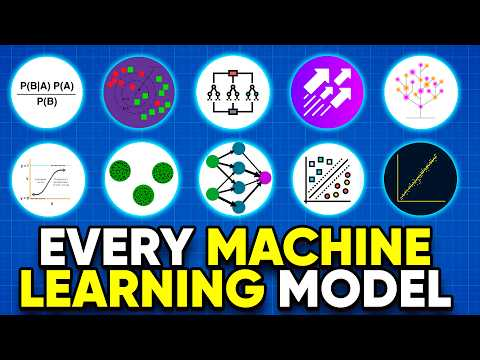
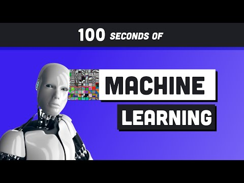
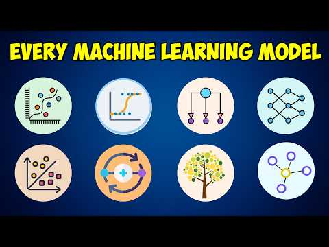
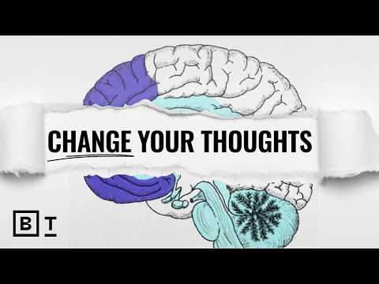
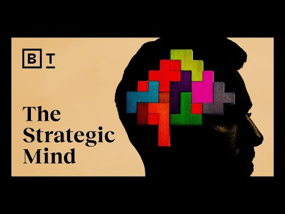
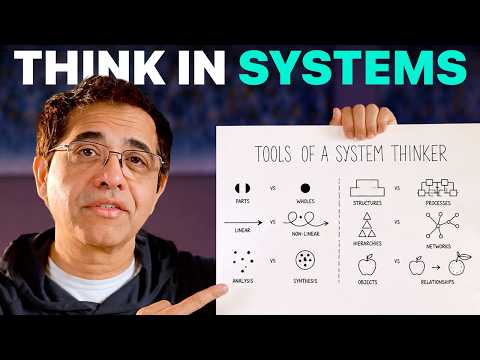
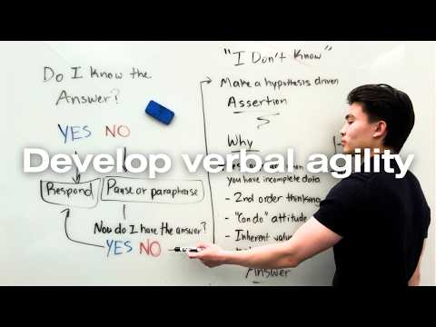

Papers, docs & articles
Courses, papers, and reference material — the denser stuff I sit down and actually work through.
When the Loop Becomes the Machine placeholder
Helped clarify that an agent is the model plus its surrounding harness — tools, memory, verification, and control flow — not just a bigger prompt.
Conformal Prediction: A Gentle Introduction placeholder
Clarified the distinction between marginal and conditional coverage — which is exactly the gap that showed up as undercoverage on high-value vehicles.
Backtesting Without Lying to Yourself placeholder
A clear walkthrough of why chronological, walk-forward splits matter for anything with a time axis — random splits quietly leak the future into the past.
Testing Data Pipelines Properly placeholder
Pushed me to write tests for the failure modes of a pipeline, not just its happy path — the parsing-bug fix in the Vacation Planner came out of applying this directly.
Numerical Linear Algebra Notes placeholder
SVD, QR, and condition numbers explained with enough rigor to actually reason about when a numerical method will be unstable, not just how to call it.
Model Context Protocol — Getting Started
The open standard for connecting AI applications to external tools, data sources, and workflows — worth understanding as more agent stacks standardize on it instead of bespoke tool integrations.
Context Engineering for AI Agents: Lessons from Building Manus
Practical lessons on KV-cache stability, masking tools instead of removing them, using the file system as external memory, and keeping failed attempts in context so the model can learn from them — concrete engineering tradeoffs beyond the usual prompting advice.
Video primers & refreshers
Short, foundational videos I go back to for a fast refresh before interviews or when explaining a concept simply.
CME295 — Transformers & LLMs from Scratch
Working through this to close gaps in transformer internals — attention mechanics, positional encoding, and training dynamics — ahead of ML engineer interviews. Pre-loading backprop chain mechanics before video 1 turned out to matter.

But what is a neural network? | Deep learning chapter 1
The visual, intuition-first mental model for layers, weights, and activations I go back to before diving into denser papers or interview questions.
Large Language Models explained briefly
A fast, visual pass on how LLMs actually generate text — a good primer before CME295's deeper dive into attention and transformer internals.

All Machine Learning algorithms explained in 17 min
A rapid survey across the standard ML algorithm families — useful as a review pass before interviews to make sure nothing major gets missed.
ML Foundations for AI Engineers (in 34 Minutes)
A condensed pass over the fundamentals interviewers actually probe — good structure for a gap-check before ML engineer interviews.

Machine Learning Explained in 100 Seconds
The quick, no-fluff framing I keep in mind for explaining ML simply — useful when the audience is a non-technical interviewer or stakeholder.

Every Machine Learning Model Explained in 15 Minutes
A fast tour across the major model families in one pass — useful as a broader review to check the algorithm survey videos above aren't missing anything.
Videos I just like
Not ML-specific — mental models and ideas outside the technical stack that I keep coming back to.

A Neuroscientist's Guide to Reclaiming Your Brain
A grounded look at attention, habits, and focus from a neuroscience angle — useful outside of any specific project, more about how I manage a long study or work session.

Become a Great Strategic Thinker
A useful framing for thinking a few steps ahead — how to weigh tradeoffs and anticipate second-order effects, which carries over well into technical decision-making.

How To Think SO CLEARLY People Assume You're Brilliant
A systems-thinking framework for spotting whether a situation is clear, complicated, complex, or chaotic — and adjusting how you decide accordingly.

How to Intelligently Reply to Any Question When Your Mind Goes Blank
A practical framework for buying time and structuring a clear answer on the spot when you're caught off guard.